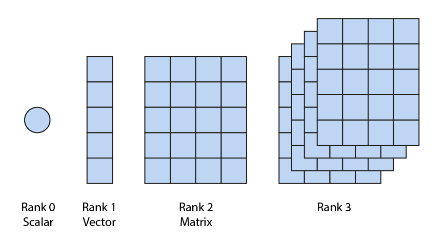

Module shoji.tensor
All data in Shoji is stored as N-dimensional tensors. A tensor is a generalisation of scalars, vectors and matrices to N dimensions.
The atomic unit of storage is the row. Tensors are read and written by row, and tensors can grow (only) by rows.
Overview
Tensors are defined by their rank, datatype, dimensions and shape.

Tensors are created like this:
import shoji
tissues = ... # Assume we have an np.ndarray of tissue names
db = shoji.connect() # Connect to the database
ws = db.scRNA # scRNA is a Workspace in the database, previously created
ws.Tissue = shoji.Tensor("string", ("cells",), tissues)
The tensor is declared with a datatype "string", a tuple of dimensions ("cells",) and an optional np.ndarray of initial values.
Rank
The rank of a tensor is the number of dimensions of the tensor. A scalar value has rank 0, a vector has rank 1, and a matrix has rank 2. Higher ranks are possible; for example, a vector of 2D images would have rank 3, and a timelapse recording in three color channels would have rank 6 (time, width, height, three colors).
Datatype
Tensors support the following datatypes:
"bool"
"uint8", "uint16", "uint32", "uint64"
"int8", "int16", "int32", "int64"
"float16", "float32", "float64"
"string"
The datatype of a tensor must always be declared; there is no default type.
When a tensor is created, any initial values provided (via the inits argument) must have the matching numpy datatype. The bool and numeric datatypes match 1:1 with numpy dtypes.
However, the Shoji string datatype is a Unicode string of variable length, which corresponds to a numpy array of string objects. That is, the corresponding numpy datatype is not str or "unicode". Instead, Shoji string tensors correspond to numpy object arrays whose elements are Python str objects. You can cast a numpy str array to an object array as follows:
import numpy as np
s = np.array(["dog", "cat", "apple", "orange"]) # s.dtype.kind == 'U'
t = s.astype(object) # t.dtype.kind == 'O'
# Or directly, using dtype
s = np.array(["dog", "cat", "apple", "orange"], dtype="object")
The reason for this discrepancy is that numpy str arrays store only fixed-length strings, whereas Shoji string tensors store strings of variable length.
Dimensions
When creating a tensor, its dimensions must be declared using a tuple.
Scalars have rank zero, and are declared with the empty tuple ().
Vectors have rank one, and are declared with a single-element tuple, e.g.
(20,) (note the comma, which is necessary). Matrices have rank 2, and are
declared with a two-element tuple, e.g. (20, 40). Higher-rank tensors are
declared with correspondingly longer tuples.
Dimensions can be fixed or variable-length. A fixed-length dimension is
declared with an integer specifying the number of elements of the dimension.
A variable-length dimension is declared as None. For example, (10, None)
is a matrix with ten rows and a variable number of columns (also known as a
jagged array).
The meaning of a variable-length first dimension is slightly different. The
first dimension cannot be jagged, but if it's declared variable-length then
the tensor can grow over time. Thus a tensor declared with
dims=(None, 10) is not jagged (at any point in time it has a fixed number of
rows and columns), but rows can be appended (see shoji.dimension and Dimension.append()).
Each dimension of a tensor can be named, and named dimensions (within a
Workspace) are constrained to have the same number of elements.
For example, if two tensors are declared with dimensions ("cells",)
and ("cells", "genes"), then the first dimensions are guaranteed to have
the same number of elements, which are assumed to be in the same order.
Named dimensions must be declared before they are used; see shoji.dimension.
Shape
The shape of a Tensor is a tuple of integers that gives the current
shape of the tensor as stored in the database. For example, a tensor with dims=(None, 10, 20)
might have shape=(10, 10, 20), indicating that currently the tensor has ten rows. Since
the first dimension is variable-length (in this case), rows might be appended later, and the shape
would change to reflect the new number of rows.
Key concept: rows
The row is the atomic unit of data storage in Shoji. For an N-dimensional tensor, the rows are the slices of the tensor along the first dimension:
- For a scalar, the single row is the entire scalar.
- For a vector, the rows are the elements of the vector.
- For a matrix, the rows are the rows of the matrix.
- For a 3D tensor, the rows are the matrices along the first dimension, and so on for higher-rank tensors.
Data in Shoji is stored and retrieved as individual rows. In other words, you can retrieve selected elements of a vector, or selected rows of a matrix, but you cannot retrieve the individual columns of a matrix.
You should think of the rows of a tensor as your objects, and each tensor
as an attribute of the objects. Multiple attributes (tensors) are linked
by sharing named dimensions. For example, to store a gene expression matrix
along with two metadata attributes, make "cells" the first dimension (so
that you can add cells), and create two tensors:
ws.cells = shoji.Dimension(shape=None) # None means variable length
ws.genes = shoji.Dimension(shape=32125)
ws.Expression = shoji.Tensor("unit16", ("cells", "genes"))
ws.Tissue = shoji.Tensor("string", ("cells",))
ws.Age = shoji.Tensor("uint16", ("cells",))
The three tensors Expression, Tissue and
Age share their first
dimension cells, which ensures that they will always have the same number
of rows (and are assumed to be in the same order).
If the size of the first dimension is variable (declared as None),
then rows can be added and removed. However, shoji makes sure that the same
number of rows is added to all tensors with the same first dimension, so that
they remain consistent with each other. When two or more tensors share the first
dimension (and it's declared variable-length), then you can only append rows
simultaneously to all those tensors (using Dimension.append()).
Jagged tensors
If any non-first dimension is declared with variable size, then the tensor is jagged. This means that the size along those dimensions can be different for different rows. For example:
ws.cells = shoji.Dimension(shape=None)
ws.Image = shoji.Tensor("uint16", ("cells", None, None))
In this example, we declare a 3D jagged tensor Image, where dimensions 2 and 3
are variable-length. This could be used to store 2D images of cells, each of which
has a different width and height. The first dimension represents the objects
(individual cells) and the 2nd and 3rd dimensions represent the images. Accessing
a single row of this tensor would return a single 2D image matrix. Accessing a set
of rows would return a list of 2D images.
In a similar way, we could store multichannel timelapse images of cells:
ws.cells = shoji.Dimension(shape=None)
ws.channels = shoji.Dimension(shape=3)
ws.timepoints = shoji.Dimension(shape=1200) # 1200 timepoints
ws.Image = shoji.Tensor("uint16", ("cells", "channels", "timepoints", None, None))
In this examples, Image is a 5-dimensional tensor, where the last two dimensions
have variable length.
Note again that tensors are read and written by row (elements of the first dimension).
There is a 5 second limit on the maximum duration of a read or write, which implicitly limits the total size of the row of a tensor. If all the data for a single row cannot be retrieved in less than five seconds, you will have to redesign the data model (e.g. breaking out some dimensions to a separate tensor).
Expand source code
"""
All data in Shoji is stored as N-dimensional tensors. A tensor is a
generalisation of scalars, vectors and matrices to N dimensions.
The atomic unit of storage is the *row*. Tensors are read and written by row,
and tensors can grow (only) by rows.
## Overview
Tensors are defined by their *rank*, *datatype*, *dimensions* and *shape*.
..image:: assets/bitmap/tensor_rank@2x.png
Tensors are created like this:
```python
import shoji
tissues = ... # Assume we have an np.ndarray of tissue names
db = shoji.connect() # Connect to the database
ws = db.scRNA # scRNA is a Workspace in the database, previously created
ws.Tissue = shoji.Tensor("string", ("cells",), tissues)
```
The tensor is declared with a datatype `"string"`, a tuple of dimensions `("cells",)` and an optional `np.ndarray` of initial values.
### Rank
The *rank* of a tensor is the number of dimensions of the tensor. A scalar
value has rank 0, a vector has rank 1, and a matrix has rank 2. Higher ranks
are possible; for example, a vector of 2D images would have rank 3, and a
timelapse recording in three color channels would have rank 6 (time, width, height,
three colors).
### Datatype
Tensors support the following datatypes:
```python
"bool"
"uint8", "uint16", "uint32", "uint64"
"int8", "int16", "int32", "int64"
"float16", "float32", "float64"
"string"
```
The datatype of a tensor must always be declared; there is no default type.
When a tensor is created, any initial values provided (via the `inits` argument) must have the matching numpy datatype. The bool and numeric datatypes match 1:1 with numpy dtypes.
However, the Shoji `string` datatype is a Unicode string of variable length, which corresponds to a numpy array of string objects. That is, the corresponding numpy datatype is *not* `str` or `"unicode"`. Instead, Shoji string tensors correspond to numpy `object` arrays whose elements are Python `str` objects. You can cast a numpy `str` array to an `object` array as follows:
```python
import numpy as np
s = np.array(["dog", "cat", "apple", "orange"]) # s.dtype.kind == 'U'
t = s.astype(object) # t.dtype.kind == 'O'
# Or directly, using dtype
s = np.array(["dog", "cat", "apple", "orange"], dtype="object")
```
The reason for this discrepancy is that numpy `str` arrays store only fixed-length strings, whereas Shoji `string` tensors store strings of variable length.
### Dimensions
When creating a tensor, its dimensions must be declared using a tuple.
Scalars have rank zero, and are declared with the empty tuple `()`.
Vectors have rank one, and are declared with a single-element tuple, e.g.
`(20,)` (note the comma, which is necessary). Matrices have rank 2, and are
declared with a two-element tuple, e.g. `(20, 40)`. Higher-rank tensors are
declared with correspondingly longer tuples.
Dimensions can be fixed or variable-length. A fixed-length dimension is
declared with an integer specifying the number of elements of the dimension.
A variable-length dimension is declared as `None`. For example, `(10, None)`
is a matrix with ten rows and a variable number of columns (also known as a
jagged array).
The meaning of a variable-length first dimension is slightly different. The
first dimension cannot be jagged, but if it's declared variable-length then
the tensor can grow over time. Thus a tensor declared with
`dims=(None, 10)` is not jagged (at any point in time it has a fixed number of
rows and columns), but rows can be appended (see `shoji.dimension` and `shoji.dimension.Dimension.append`).
Each dimension of a tensor can be named, and named dimensions (within a
`shoji.workspace.Workspace`) are constrained to have the same number of elements.
For example, if two tensors are declared with dimensions `("cells",)`
and `("cells", "genes")`, then the first dimensions are guaranteed to have
the same number of elements, which are assumed to be in the same order.
Named dimensions must be declared before they are used; see `shoji.dimension`.
### Shape
The `shape` of a `shoji.tensor.Tensor` is a tuple of integers that gives the current
shape of the tensor as stored in the database. For example, a tensor with `dims=(None, 10, 20)`
might have `shape=(10, 10, 20)`, indicating that currently the tensor has ten rows. Since
the first dimension is variable-length (in this case), rows might be appended later, and the shape
would change to reflect the new number of rows.
## Key concept: rows
The *row* is the atomic unit of data storage in Shoji. For an N-dimensional tensor, the rows are
the slices of the tensor along the first dimension:
- For a scalar, the single row is the entire scalar.
- For a vector, the rows are the elements of the vector.
- For a matrix, the rows are the rows of the matrix.
- For a 3D tensor, the rows are the matrices along the first dimension, and so on for higher-rank tensors.
Data in Shoji is stored and retrieved as individual rows. In other words,
you can retrieve selected elements of a vector, or selected rows of a matrix,
but you cannot retrieve the individual columns of a matrix.
You should think of the rows of a tensor as your *objects*, and each tensor
as an attribute of the objects. Multiple attributes (tensors) are linked
by sharing named dimensions. For example, to store a gene expression matrix
along with two metadata attributes, make `"cells"` the first dimension (so
that you can add cells), and create two tensors:
```python
ws.cells = shoji.Dimension(shape=None) # None means variable length
ws.genes = shoji.Dimension(shape=32125)
ws.Expression = shoji.Tensor("unit16", ("cells", "genes"))
ws.Tissue = shoji.Tensor("string", ("cells",))
ws.Age = shoji.Tensor("uint16", ("cells",))
```
The three tensors `Expression`, `Tissue` and `Age` share their first
dimension `cells`, which ensures that they will always have the same number
of rows (and are assumed to be in the same order).
If the size of the first dimension is variable (declared as `None`),
then rows can be added and removed. However, shoji makes sure that the same
number of rows is added to all tensors with the same first dimension, so that
they remain consistent with each other. When two or more tensors share the first
dimension (and it's declared variable-length), then you can only append rows
simultaneously to all those tensors (using `shoji.dimension.Dimension.append`).
## Jagged tensors
If any non-first dimension is declared with variable size, then the tensor is
*jagged*. This means that the size along those dimensions can be different for
different rows. For example:
```python
ws.cells = shoji.Dimension(shape=None)
ws.Image = shoji.Tensor("uint16", ("cells", None, None))
```
In this example, we declare a 3D jagged tensor `Image`, where dimensions 2 and 3
are variable-length. This could be used to store 2D images of cells, each of which
has a different width and height. The first dimension represents the objects
(individual cells) and the 2nd and 3rd dimensions represent the images. Accessing
a single row of this tensor would return a single 2D image matrix. Accessing a set
of rows would return a list of 2D images.
In a similar way, we could store multichannel timelapse images of cells:
```python
ws.cells = shoji.Dimension(shape=None)
ws.channels = shoji.Dimension(shape=3)
ws.timepoints = shoji.Dimension(shape=1200) # 1200 timepoints
ws.Image = shoji.Tensor("uint16", ("cells", "channels", "timepoints", None, None))
```
In this examples, `Image` is a 5-dimensional tensor, where the last two dimensions
have variable length.
Note again that tensors are read and written by row (elements of the first dimension).
There is a 5 second limit on the maximum duration of a read or write, which implicitly
limits the total size of the row of a tensor. If all the data for a single row cannot
be retrieved in less than five seconds, you will have to redesign the data model (e.g.
breaking out some dimensions to a separate tensor).
"""
from typing import Tuple, Union, List, Optional, Callable
import numpy as np
import shoji
class TensorValue:
def __init__(self, values: Union[Tuple[np.ndarray], List[np.ndarray], np.ndarray]) -> None:
self.values = values
if isinstance(values, (list, tuple)):
self.jagged = True
self.rank = values[0].ndim + 1
self.dtype = values[0].dtype.name
if self.dtype == "object":
self.dtype = "string"
shape: List[int] = list(values[0].shape)
for i, array in enumerate(values):
if not isinstance(array, np.ndarray):
raise ValueError("Rows of jagged tensor must be numpy ndarrays")
if self.rank != array.ndim + 1:
raise ValueError("Rows of jagged tensor cannot be mixed rank")
if self.dtype != array.dtype:
raise ValueError("Rows of jagged tensor cannot be mixed dtype")
if self.dtype == "string":
if not all([isinstance(x, str) for x in array.flat]):
raise TypeError("string tensors (numpy dtype='object') must contain only string elements")
if array.ndim != len(shape):
raise ValueError(f"Rank mismatch: shape {array.shape} of subarray at row {i} is not the same rank as shape {shape} at row 0")
for ix in range(len(shape)):
if shape[ix] != array.shape[ix]:
shape[ix] = 0
self.shape = tuple([len(values)] + shape)
else:
self.jagged = False
self.rank = values.ndim
self.dtype = values.dtype.name
if self.dtype == "object":
self.dtype = "string"
if not all([isinstance(x, str) for x in values.flat]):
raise TypeError("string tensors (numpy dtype='object') must contain only string elements")
self.shape = values.shape
if self.dtype not in Tensor.valid_types:
raise TypeError(f"Invalid dtype '{self.dtype}' for tensor value")
@property
def size(self) -> int:
return np.prod(self.shape)
def __len__(self) -> int:
if self.rank > 0:
return self.shape[0]
return 1
def __iter__(self):
for row in self.values:
yield row
def size_in_bytes(self) -> int:
n_bytes = 0
if not self.jagged:
if self.dtype == "string":
n_bytes += sum([len(s) for s in self.values]) * 2
else:
n_bytes += self.values.size * self.values.itemsize # type: ignore
else:
for row in self.values:
if self.dtype == "string":
n_bytes += sum([len(s) for s in row]) * 2
else:
n_bytes += row.size * row.itemsize
return n_bytes
class Tensor:
valid_types = ("bool", "uint8", "uint16", "uint32", "uint64", "int8", "int16", "int32", "int64", "float16", "float32", "float64", "string")
def __init__(self, dtype: str, dims: Union[Tuple[Union[None, int, str], ...]], inits: Union[List[np.ndarray], np.ndarray] = None, shape: Tuple[int, ...] = None) -> None:
"""
Args:
dtype: string giving the datatype of the tensor elements
dims: A tuple of None, int, string (empty tuple designates a scalar)
inits: Optional values to initialize the tensor with
Remarks:
Dimensions are specified as:
None: resizable/jagged anonymous dimension
int: fixed-shape anonymous dimension
string: named dimension
The first dimension can be fixed-shape or resizable; all other dimensions can be fixed-shape or jagged.
"""
self.dtype = dtype
# Check that the type is valid
if dtype not in Tensor.valid_types:
raise TypeError(f"Invalid Tensor type {dtype}")
self.dims = dims
self.name = "" # Will be set if the Tensor is read from the db
self.wsm: Optional[shoji.WorkspaceManager] = None # Will be set if the Tensor is read from the db
if inits is None:
self.inits: TensorValue = None
self.jagged = False
self.shape = shape if shape is not None else (0,) * len(dims)
else:
# If scalar, convert to an ndarray scalar which will have shape ()
if np.isscalar(inits):
self.inits = TensorValue(np.array(inits, dtype=self.numpy_dtype()))
else:
self.inits = TensorValue(inits)
self.jagged = self.inits.jagged
self.shape = self.inits.shape
if len(self.dims) != len(self.shape):
raise ValueError(f"Rank mismatch: shape {self.dims} declared is not the same rank as shape {self.shape} of values")
if self.dtype != self.inits.dtype:
raise TypeError(f"Tensor dtype '{self.dtype}' does not match dtype of inits '{self.inits.dtype}'")
for ix, dim in enumerate(self.dims):
if dim is not None and not isinstance(dim, int) and not isinstance(dim, str):
raise ValueError(f"Dimension {ix} '{dim}' is invalid (must be None, int or str)")
if isinstance(dim, int) and self.inits is not None:
if self.shape[ix] != dim: # type: ignore
raise IndexError(f"Mismatch between the declared shape {dim} of dimension {ix} and the inferred shape {self.shape} of values")
self.rank = len(self.dims)
def __len__(self) -> int:
if self.rank > 0:
return self.shape[0]
return 0
def __getitem__(self, expr: Union["shoji.Filter", tuple, slice, int]) -> np.ndarray:
assert self.wsm is not None, "Tensor is not bound to a database"
# Maybe it's a Filter?
if isinstance(expr, shoji.Filter):
return shoji.View(self.wsm, (expr,))[self.name]
# Or a slice?
if isinstance(expr, slice):
if expr.start is None and expr.stop is None:
return shoji.View(self.wsm, ())[self.name]
return shoji.View(self.wsm, (shoji.TensorSliceFilter(self, expr),))[self.name]
if isinstance(expr, (list, tuple, int)):
expr = np.array(expr)
if isinstance(expr, np.ndarray):
if np.issubdtype(expr.dtype, np.bool_):
return shoji.View(self.wsm, (shoji.TensorBoolFilter(self, expr),))[self.name]
elif np.issubdtype(expr.dtype, np.int_):
return shoji.View(self.wsm, (shoji.TensorIndicesFilter(self, expr),))[self.name]
raise KeyError(expr)
def __setitem__(self, expr: Union["shoji.Filter", tuple, slice, int], vals: np.ndarray) -> None:
assert self.wsm is not None, "Tensor is not bound to a database"
# Maybe it's a Filter?
if isinstance(expr, shoji.Filter):
shoji.View(self.wsm, (expr,))[self.name] = vals
# Or a slice?
if isinstance(expr, slice):
if expr.start is None and expr.stop is None:
shoji.View(self.wsm, ())[self.name] = vals
shoji.View(self.wsm, (shoji.TensorSliceFilter(self, expr),))[self.name] = vals
if isinstance(expr, (list, tuple, int)):
expr = np.array(expr)
if isinstance(expr, np.ndarray):
if np.issubdtype(expr.dtype, np.bool_):
shoji.View(self.wsm, (shoji.TensorBoolFilter(self, expr),))[self.name] = vals
elif np.issubdtype(expr.dtype, np.int_):
shoji.View(self.wsm, (shoji.TensorIndicesFilter(self, expr),))[self.name] = vals
raise KeyError(expr)
def numpy_dtype(self) -> str:
if self.dtype == "string":
return "object"
return self.dtype
def python_dtype(self) -> Callable:
if self.dtype == "string":
return str
if self.dtype == "bool":
return bool
if self.dtype in ("float16", "float32", "float64"):
return float
return int
def _compare(self, operator, other) -> "shoji.Filter":
if isinstance(other, Tensor):
return shoji.TensorFilter(operator, self, other)
elif isinstance(other, str) or isinstance(other, int) or isinstance(other, float) or isinstance(other, bool):
return shoji.ConstFilter(operator, self, other)
else:
raise TypeError("Invalid operands for expression")
def __eq__(self, other) -> "shoji.Filter": # type: ignore
return self._compare("==", other)
def __ne__(self, other) -> "shoji.Filter": # type: ignore
return self._compare("!=", other)
def __gt__(self, other) -> "shoji.Filter": # type: ignore
return self._compare(">", other)
def __lt__(self, other) -> "shoji.Filter": # type: ignore
return self._compare("<", other)
def __ge__(self, other) -> "shoji.Filter": # type: ignore
return self._compare(">=", other)
def __le__(self, other) -> "shoji.Filter": # type: ignore
return self._compare("<=", other)
def append(self, vals: Union[List[np.ndarray], np.ndarray]) -> None:
assert self.wsm is not None, "Cannot append to unbound tensor"
if self.rank == 0:
raise ValueError("Cannot append to a scalar")
if isinstance(self.dims[0], str):
if self.wsm is not None:
d = self.wsm[self.dims[0]]
if isinstance(d, shoji.Dimension):
d.append(vals)
return
raise ValueError(f"Failed to append along named first dimension {self.dims[0]}")
tv = TensorValue(vals)
n_bytes = tv.size_in_bytes()
n_batches = max(1, n_bytes // 5_000_000) # Should be plenty, given that we'll also be compressing the rows when writing
n_rows_per_transaction = max(1, len(vals) // n_batches)
ix: int = 0
while ix < len(vals):
batch = {self.name: vals[ix: ix + n_rows_per_transaction]}
shoji.io.append_tensors(self.wsm._db.transaction, self.wsm, self.name, batch)
ix += n_rows_per_transaction
def _quick_look(self) -> str:
if self.rank == 0:
if self.dtype == "string":
s = f'"{self[:]}"'
else:
s = str(self[:])
if len(s) > 60:
return s[:56] + " ..."
return s
def look(vals) -> str:
s = "["
if not isinstance(vals, list) and vals.ndim == 1:
if self.dtype == "string":
s += ", ".join([f'"{x}"' for x in vals[:5]])
else:
s += ", ".join([str(x) for x in vals[:5]])
else:
elms = []
for val in vals[:5]:
elms.append(look(val))
s += ", ".join(elms)
if len(vals) > 5:
s += ", ...]"
else:
s += "]"
return s
s = look(self[:10])
if len(s) > 60:
return s[:56] + " ···"
return s
def __repr__(self) -> str:
return f"<Tensor {self.name} dtype='{self.dtype}' dims={self.dims}, shape={self.shape}>"Classes
class Tensor (dtype: str, dims: Tuple[Union[NoneType, int, str], ...], inits: Union[List[numpy.ndarray], numpy.ndarray] = None, shape: Tuple[int, ...] = None)-
Args
dtype- string giving the datatype of the tensor elements
dims- A tuple of None, int, string (empty tuple designates a scalar)
inits- Optional values to initialize the tensor with
Remarks
Dimensions are specified as:
None: resizable/jagged anonymous dimension int: fixed-shape anonymous dimension string: named dimensionThe first dimension can be fixed-shape or resizable; all other dimensions can be fixed-shape or jagged.
Expand source code
class Tensor: valid_types = ("bool", "uint8", "uint16", "uint32", "uint64", "int8", "int16", "int32", "int64", "float16", "float32", "float64", "string") def __init__(self, dtype: str, dims: Union[Tuple[Union[None, int, str], ...]], inits: Union[List[np.ndarray], np.ndarray] = None, shape: Tuple[int, ...] = None) -> None: """ Args: dtype: string giving the datatype of the tensor elements dims: A tuple of None, int, string (empty tuple designates a scalar) inits: Optional values to initialize the tensor with Remarks: Dimensions are specified as: None: resizable/jagged anonymous dimension int: fixed-shape anonymous dimension string: named dimension The first dimension can be fixed-shape or resizable; all other dimensions can be fixed-shape or jagged. """ self.dtype = dtype # Check that the type is valid if dtype not in Tensor.valid_types: raise TypeError(f"Invalid Tensor type {dtype}") self.dims = dims self.name = "" # Will be set if the Tensor is read from the db self.wsm: Optional[shoji.WorkspaceManager] = None # Will be set if the Tensor is read from the db if inits is None: self.inits: TensorValue = None self.jagged = False self.shape = shape if shape is not None else (0,) * len(dims) else: # If scalar, convert to an ndarray scalar which will have shape () if np.isscalar(inits): self.inits = TensorValue(np.array(inits, dtype=self.numpy_dtype())) else: self.inits = TensorValue(inits) self.jagged = self.inits.jagged self.shape = self.inits.shape if len(self.dims) != len(self.shape): raise ValueError(f"Rank mismatch: shape {self.dims} declared is not the same rank as shape {self.shape} of values") if self.dtype != self.inits.dtype: raise TypeError(f"Tensor dtype '{self.dtype}' does not match dtype of inits '{self.inits.dtype}'") for ix, dim in enumerate(self.dims): if dim is not None and not isinstance(dim, int) and not isinstance(dim, str): raise ValueError(f"Dimension {ix} '{dim}' is invalid (must be None, int or str)") if isinstance(dim, int) and self.inits is not None: if self.shape[ix] != dim: # type: ignore raise IndexError(f"Mismatch between the declared shape {dim} of dimension {ix} and the inferred shape {self.shape} of values") self.rank = len(self.dims) def __len__(self) -> int: if self.rank > 0: return self.shape[0] return 0 def __getitem__(self, expr: Union["shoji.Filter", tuple, slice, int]) -> np.ndarray: assert self.wsm is not None, "Tensor is not bound to a database" # Maybe it's a Filter? if isinstance(expr, shoji.Filter): return shoji.View(self.wsm, (expr,))[self.name] # Or a slice? if isinstance(expr, slice): if expr.start is None and expr.stop is None: return shoji.View(self.wsm, ())[self.name] return shoji.View(self.wsm, (shoji.TensorSliceFilter(self, expr),))[self.name] if isinstance(expr, (list, tuple, int)): expr = np.array(expr) if isinstance(expr, np.ndarray): if np.issubdtype(expr.dtype, np.bool_): return shoji.View(self.wsm, (shoji.TensorBoolFilter(self, expr),))[self.name] elif np.issubdtype(expr.dtype, np.int_): return shoji.View(self.wsm, (shoji.TensorIndicesFilter(self, expr),))[self.name] raise KeyError(expr) def __setitem__(self, expr: Union["shoji.Filter", tuple, slice, int], vals: np.ndarray) -> None: assert self.wsm is not None, "Tensor is not bound to a database" # Maybe it's a Filter? if isinstance(expr, shoji.Filter): shoji.View(self.wsm, (expr,))[self.name] = vals # Or a slice? if isinstance(expr, slice): if expr.start is None and expr.stop is None: shoji.View(self.wsm, ())[self.name] = vals shoji.View(self.wsm, (shoji.TensorSliceFilter(self, expr),))[self.name] = vals if isinstance(expr, (list, tuple, int)): expr = np.array(expr) if isinstance(expr, np.ndarray): if np.issubdtype(expr.dtype, np.bool_): shoji.View(self.wsm, (shoji.TensorBoolFilter(self, expr),))[self.name] = vals elif np.issubdtype(expr.dtype, np.int_): shoji.View(self.wsm, (shoji.TensorIndicesFilter(self, expr),))[self.name] = vals raise KeyError(expr) def numpy_dtype(self) -> str: if self.dtype == "string": return "object" return self.dtype def python_dtype(self) -> Callable: if self.dtype == "string": return str if self.dtype == "bool": return bool if self.dtype in ("float16", "float32", "float64"): return float return int def _compare(self, operator, other) -> "shoji.Filter": if isinstance(other, Tensor): return shoji.TensorFilter(operator, self, other) elif isinstance(other, str) or isinstance(other, int) or isinstance(other, float) or isinstance(other, bool): return shoji.ConstFilter(operator, self, other) else: raise TypeError("Invalid operands for expression") def __eq__(self, other) -> "shoji.Filter": # type: ignore return self._compare("==", other) def __ne__(self, other) -> "shoji.Filter": # type: ignore return self._compare("!=", other) def __gt__(self, other) -> "shoji.Filter": # type: ignore return self._compare(">", other) def __lt__(self, other) -> "shoji.Filter": # type: ignore return self._compare("<", other) def __ge__(self, other) -> "shoji.Filter": # type: ignore return self._compare(">=", other) def __le__(self, other) -> "shoji.Filter": # type: ignore return self._compare("<=", other) def append(self, vals: Union[List[np.ndarray], np.ndarray]) -> None: assert self.wsm is not None, "Cannot append to unbound tensor" if self.rank == 0: raise ValueError("Cannot append to a scalar") if isinstance(self.dims[0], str): if self.wsm is not None: d = self.wsm[self.dims[0]] if isinstance(d, shoji.Dimension): d.append(vals) return raise ValueError(f"Failed to append along named first dimension {self.dims[0]}") tv = TensorValue(vals) n_bytes = tv.size_in_bytes() n_batches = max(1, n_bytes // 5_000_000) # Should be plenty, given that we'll also be compressing the rows when writing n_rows_per_transaction = max(1, len(vals) // n_batches) ix: int = 0 while ix < len(vals): batch = {self.name: vals[ix: ix + n_rows_per_transaction]} shoji.io.append_tensors(self.wsm._db.transaction, self.wsm, self.name, batch) ix += n_rows_per_transaction def _quick_look(self) -> str: if self.rank == 0: if self.dtype == "string": s = f'"{self[:]}"' else: s = str(self[:]) if len(s) > 60: return s[:56] + " ..." return s def look(vals) -> str: s = "[" if not isinstance(vals, list) and vals.ndim == 1: if self.dtype == "string": s += ", ".join([f'"{x}"' for x in vals[:5]]) else: s += ", ".join([str(x) for x in vals[:5]]) else: elms = [] for val in vals[:5]: elms.append(look(val)) s += ", ".join(elms) if len(vals) > 5: s += ", ...]" else: s += "]" return s s = look(self[:10]) if len(s) > 60: return s[:56] + " ···" return s def __repr__(self) -> str: return f"<Tensor {self.name} dtype='{self.dtype}' dims={self.dims}, shape={self.shape}>"Class variables
var valid_types
Methods
def append(self, vals: Union[List[numpy.ndarray], numpy.ndarray]) ‑> NoneType-
Expand source code
def append(self, vals: Union[List[np.ndarray], np.ndarray]) -> None: assert self.wsm is not None, "Cannot append to unbound tensor" if self.rank == 0: raise ValueError("Cannot append to a scalar") if isinstance(self.dims[0], str): if self.wsm is not None: d = self.wsm[self.dims[0]] if isinstance(d, shoji.Dimension): d.append(vals) return raise ValueError(f"Failed to append along named first dimension {self.dims[0]}") tv = TensorValue(vals) n_bytes = tv.size_in_bytes() n_batches = max(1, n_bytes // 5_000_000) # Should be plenty, given that we'll also be compressing the rows when writing n_rows_per_transaction = max(1, len(vals) // n_batches) ix: int = 0 while ix < len(vals): batch = {self.name: vals[ix: ix + n_rows_per_transaction]} shoji.io.append_tensors(self.wsm._db.transaction, self.wsm, self.name, batch) ix += n_rows_per_transaction def numpy_dtype(self) ‑> str-
Expand source code
def numpy_dtype(self) -> str: if self.dtype == "string": return "object" return self.dtype def python_dtype(self) ‑> Callable-
Expand source code
def python_dtype(self) -> Callable: if self.dtype == "string": return str if self.dtype == "bool": return bool if self.dtype in ("float16", "float32", "float64"): return float return int
class TensorValue (values: Union[Tuple[numpy.ndarray], List[numpy.ndarray], numpy.ndarray])-
Expand source code
class TensorValue: def __init__(self, values: Union[Tuple[np.ndarray], List[np.ndarray], np.ndarray]) -> None: self.values = values if isinstance(values, (list, tuple)): self.jagged = True self.rank = values[0].ndim + 1 self.dtype = values[0].dtype.name if self.dtype == "object": self.dtype = "string" shape: List[int] = list(values[0].shape) for i, array in enumerate(values): if not isinstance(array, np.ndarray): raise ValueError("Rows of jagged tensor must be numpy ndarrays") if self.rank != array.ndim + 1: raise ValueError("Rows of jagged tensor cannot be mixed rank") if self.dtype != array.dtype: raise ValueError("Rows of jagged tensor cannot be mixed dtype") if self.dtype == "string": if not all([isinstance(x, str) for x in array.flat]): raise TypeError("string tensors (numpy dtype='object') must contain only string elements") if array.ndim != len(shape): raise ValueError(f"Rank mismatch: shape {array.shape} of subarray at row {i} is not the same rank as shape {shape} at row 0") for ix in range(len(shape)): if shape[ix] != array.shape[ix]: shape[ix] = 0 self.shape = tuple([len(values)] + shape) else: self.jagged = False self.rank = values.ndim self.dtype = values.dtype.name if self.dtype == "object": self.dtype = "string" if not all([isinstance(x, str) for x in values.flat]): raise TypeError("string tensors (numpy dtype='object') must contain only string elements") self.shape = values.shape if self.dtype not in Tensor.valid_types: raise TypeError(f"Invalid dtype '{self.dtype}' for tensor value") @property def size(self) -> int: return np.prod(self.shape) def __len__(self) -> int: if self.rank > 0: return self.shape[0] return 1 def __iter__(self): for row in self.values: yield row def size_in_bytes(self) -> int: n_bytes = 0 if not self.jagged: if self.dtype == "string": n_bytes += sum([len(s) for s in self.values]) * 2 else: n_bytes += self.values.size * self.values.itemsize # type: ignore else: for row in self.values: if self.dtype == "string": n_bytes += sum([len(s) for s in row]) * 2 else: n_bytes += row.size * row.itemsize return n_bytesInstance variables
var size : int-
Expand source code
@property def size(self) -> int: return np.prod(self.shape)
Methods
def size_in_bytes(self) ‑> int-
Expand source code
def size_in_bytes(self) -> int: n_bytes = 0 if not self.jagged: if self.dtype == "string": n_bytes += sum([len(s) for s in self.values]) * 2 else: n_bytes += self.values.size * self.values.itemsize # type: ignore else: for row in self.values: if self.dtype == "string": n_bytes += sum([len(s) for s in row]) * 2 else: n_bytes += row.size * row.itemsize return n_bytes